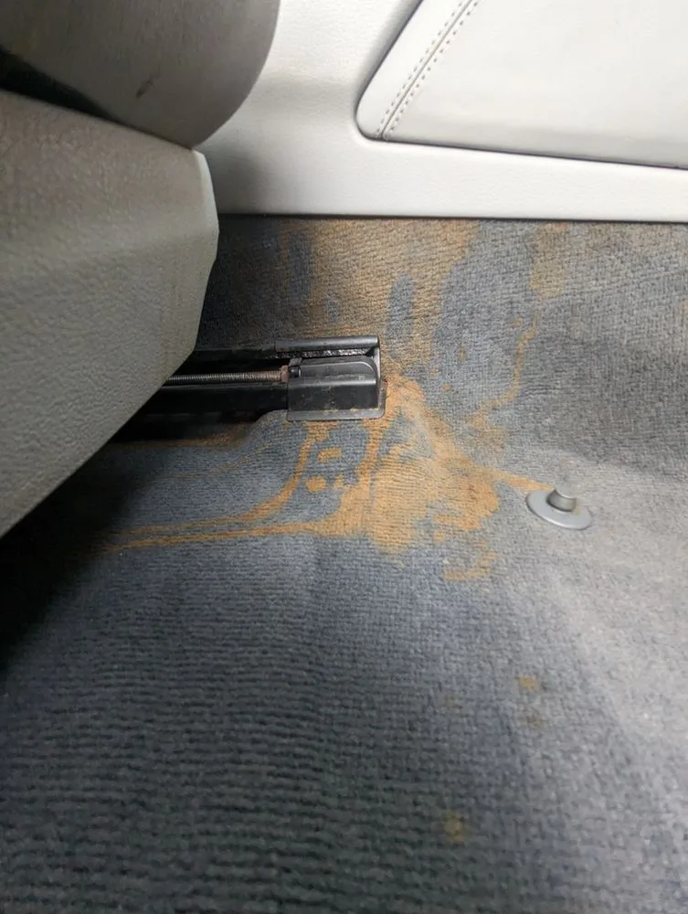
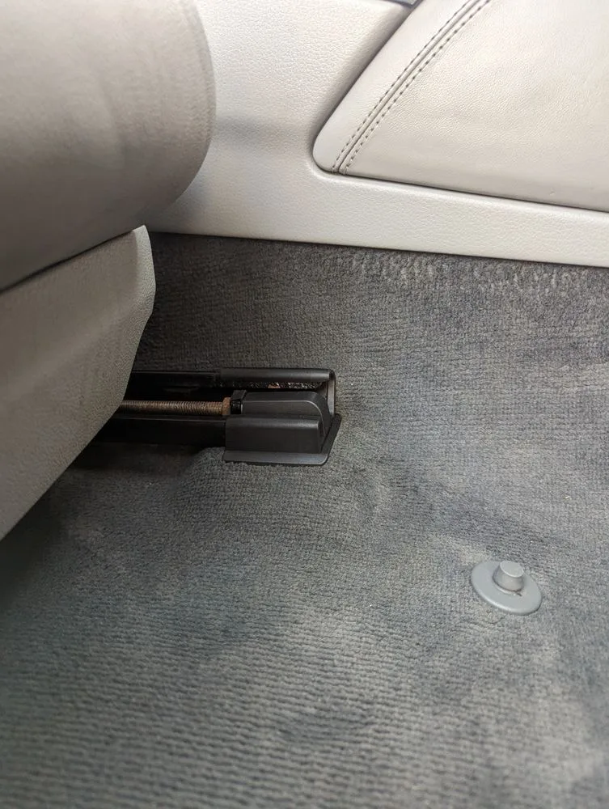

SERVIS DI KEDAI · SERI KEMBANGAN
Cuci Karpet Lantai Kereta di Seri Kembangan
Karpet kotor, basah atau berbau hapak? Hantar gambar kawasan terjejas untuk semakan awal. Kami menyediakan cucian karpet lantai di kedai Taman Kota Perdana, Seri Kembangan, dengan skop yang ditentukan selepas pemeriksaan.
RM80–RM120 Bergantung pada keadaan karpet, jenis kereta dan skop cucian.
Semak Harga & Slot di WhatsAppKeadaan karpet yang boleh kami semak
Beritahu kami bahagian yang terjejas dan bagaimana masalah bermula. Keadaan yang berbeza mungkin memerlukan skop cucian yang berbeza.
- Karpet kotor serta habuk dan pasir terkumpul.
- Tumpahan air atau minuman.
- Karpet basah atau lembap.
- Bau hapak pada kawasan karpet.
- Kotoran di kawasan bawah seat.
Karpet yang kelihatan bersih masih mungkin mempunyai sisa atau kelembapan pada kawasan yang sukar dicapai. Cucian biasa tidak semestinya menyelesaikan semua masalah karpet basah atau berbau.
Karpet lantai berbeza daripada karpet kaki
Karpet lantai ialah lapisan karpet yang dipasang pada lantai kereta, termasuk kawasan bawah seat. Karpet kaki pula ialah alas berasingan yang boleh dikeluarkan. Julat RM80–RM120 pada halaman ini merujuk kepada servis cuci karpet lantai.
Untuk alas kaki, lihat servis cuci karpet kaki dan harganya.
Cucian tanpa buka seat atau dengan buka seat
RM120 tidak semestinya termasuk pembukaan seat atau pengeluaran keseluruhan karpet. Skop dan harga dipersetujui selepas pemeriksaan. Kerja yang diperlukan akan diterangkan sebelum harga dipersetujui.
Bagaimana kerja cucian ditentukan?
Pemeriksaan keadaan karpet
Kami semak keadaan karpet dan kawasan yang memerlukan cucian, termasuk bawah seat jika terjejas.
Penentuan skop dan harga
Jenis kereta, keadaan karpet dan skop kerja digunakan untuk menentukan harga serta keperluan membuka seat.
Cucian mengikut skop yang dipersetujui
Cucian dilakukan tanpa membuka seat atau dengan pembukaan seat apabila diperlukan, berdasarkan pemeriksaan.
Pengeringan dan pemeriksaan akhir
Kerja diteruskan dengan pengeringan dan pemeriksaan akhir. Anggaran masa disahkan mengikut keadaan kereta dan skop cucian.
Gambar cucian karpet lantai sebelum dan selepas


Gambar menunjukkan keadaan permukaan karpet dalam satu kerja cucian. Hasil berbeza mengikut bahan dan keadaan kotoran; gambar tidak membuktikan semua bau telah hilang.
Soalan tentang cuci karpet lantai kereta
Berapa harga cuci karpet lantai kereta?
Harga ialah RM80–RM120, bergantung pada keadaan karpet, jenis kereta dan skop cucian. Skop serta harga disahkan selepas pemeriksaan. RM120 tidak semestinya termasuk pembukaan seat atau pengeluaran keseluruhan karpet.
Adakah semua seat perlu dibuka?
Tidak semestinya. Keperluan membuka seat ditentukan selepas pemeriksaan keadaan karpet dan kawasan yang perlu dicuci. Tidak semua kerja melibatkan pembukaan seat atau pengeluaran keseluruhan karpet.
Boleh cuci karpet tanpa membuka seat?
Ya, cucian boleh dilakukan tanpa membuka seat, bergantung pada keadaan kereta dan skop yang diperlukan. Jika kawasan bawah seat memerlukan akses tambahan, kami semak dahulu sebelum mencadangkan pembukaan seat.
Bagaimana jika karpet basah dan berbau?
Hantar gambar dan maklumkan bila karpet mula basah serta punca yang diketahui. Kami perlu memeriksa kawasan terjejas sebelum menentukan skop. Tidak semua karpet basah atau berbau boleh diselesaikan dengan cucian biasa; hasil bergantung pada punca dan keadaan kereta.
Berapa lama proses cucian?
Tempoh bergantung pada keadaan karpet, skop cucian dan pengeringan. Anggaran masa disahkan selepas pemeriksaan. Kami tidak menjanjikan semua kerja siap pada hari yang sama.
Perlu buat tempahan dahulu?
Semak slot melalui WhatsApp sebelum datang. Hantar model kereta dan gambar karpet supaya kami boleh membuat semakan awal. Pelanggan perlu menghantar kereta ke kedai di Taman Kota Perdana, Seri Kembangan; tiada servis mobile.
Hantar kereta ke kedai kami di Seri Kembangan
Kami beroperasi di kedai sahaja, bukan mobile service. Pelanggan dari Cyberjaya, Putrajaya dan Puchong boleh menghantar kereta ke kedai ini; kawasan tersebut bukan lokasi cawangan.
9:00 pagi–6:00 petang
D-00-01, Pangsapuri Mawar Jaya, Jalan KP 4/4, Taman Kota Perdana, 43300 Seri Kembangan, Selangor.Lihat maklumat lokasi pada halaman utama →
Jika ada bahagian cucian yang tidak memuaskan, hubungi kami dalam 3 hari selepas cucian untuk semakan dan cucian semula tanpa caj tambahan.